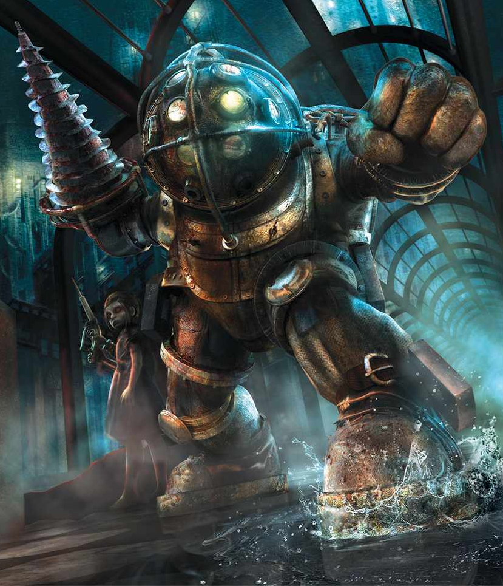

1960 Rapture
In de vroege jaren 1960 richtte de visionaire zakenman Andrew Ryan de onderwaterstad Rapture op, een utopische samenleving ver verwijderd van de bovenwereld. Het was in deze periode dat de eerste Big Daddies, bekend als Bouncers en Rosies, werden gecreëerd. Ze waren ontworpen om Little Sisters te beschermen terwijl ze ADAM verzamelden. ADAM wordt gebruikt om de eigenschappen van mensen te verbeteren door middel van genetische aanpassingen, die plasmiden worden genoemd. adam is ook verslavend voor de gebruiker Rapture bloeide als een technologisch wonder, maar het overmatige gebruik van ADAM leidde al snel tot de opkomst van de Splicers (verslaafde bewoners) en de neergang van de stad
